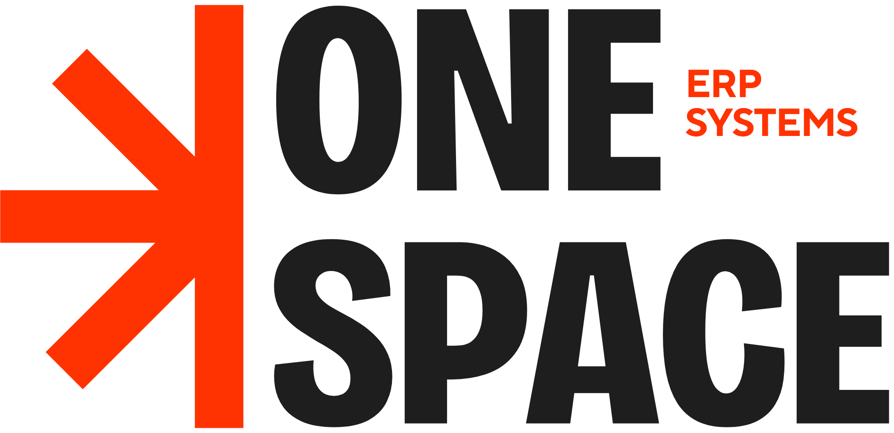
BUSINESS OPERATIONS
OneSpace
ERP selection, implementation, integration, and support. Connect finance, sales, stock, and daily work.
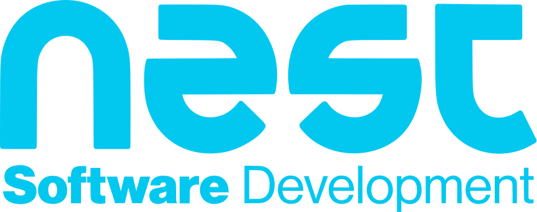
COMPANY PROFILE / OCTOBER 2026THE ALL-IN-ONE TECHNICAL PARTNER
Connect the systems behind your business
and the experiences your customers see.
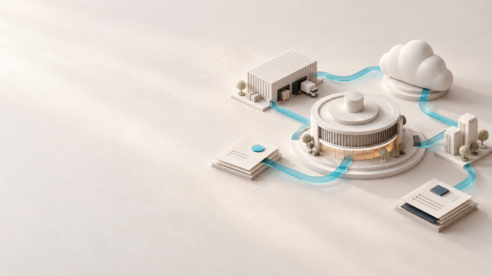
BASED IN EGYPT. BUILT AROUND YOUR BUSINESS.
Nest Software Development brings business systems, digital experiences, communications, and infrastructure into one technical partnership.
Based in 6th of October City, Giza, we help organisations connect the work customers see with the systems that keep the promise. An enquiry, an order, a call, and an invoice belong to the same business story.
We begin with how your people work, define the gaps that matter, and turn them into a practical plan for implementation, adoption, and ongoing care.
Make technology useful in the working day. Translate real operational needs into a clear scope, connected workflows, and a practical path to delivery.
Give growing businesses room to move, with systems that support change and consider people, ownership, and maintenance from the start.
SPECIALIST FOCUS. SHARED DIRECTION.
Start with a focused need, or build a wider plan. Each Nest brand has a clear role within the same customer and operational journey.

BUSINESS OPERATIONS
ERP selection, implementation, integration, and support. Connect finance, sales, stock, and daily work.
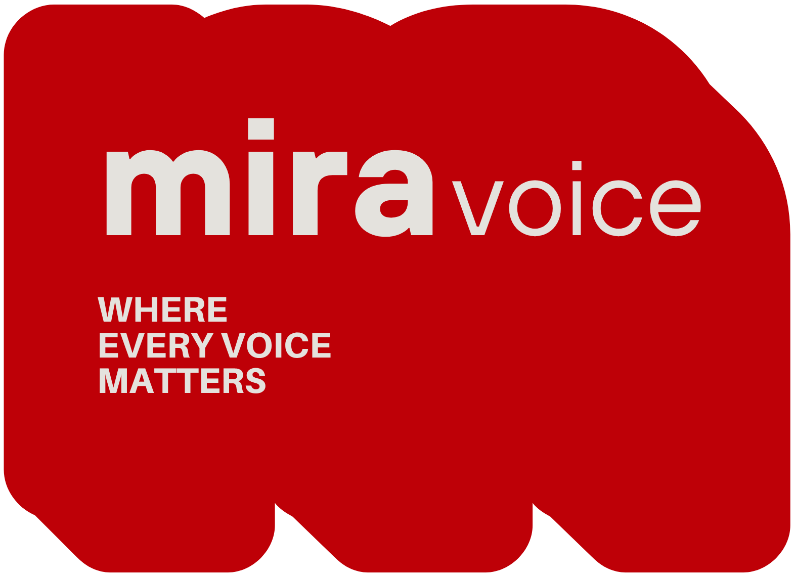
BUSINESS COMMUNICATIONS
Business calling designed around the caller journey, team availability, and accountable follow-up.
HOSTING & CONTINUITY
A managed home for business applications, with defined capacity, maintenance, backups, and recovery.
03 / ONESPACE ERP
An order should move your business forward, not start another round of calls and spreadsheets. OneSpace connects finance, sales, stock, and daily operations around a shared way of working.
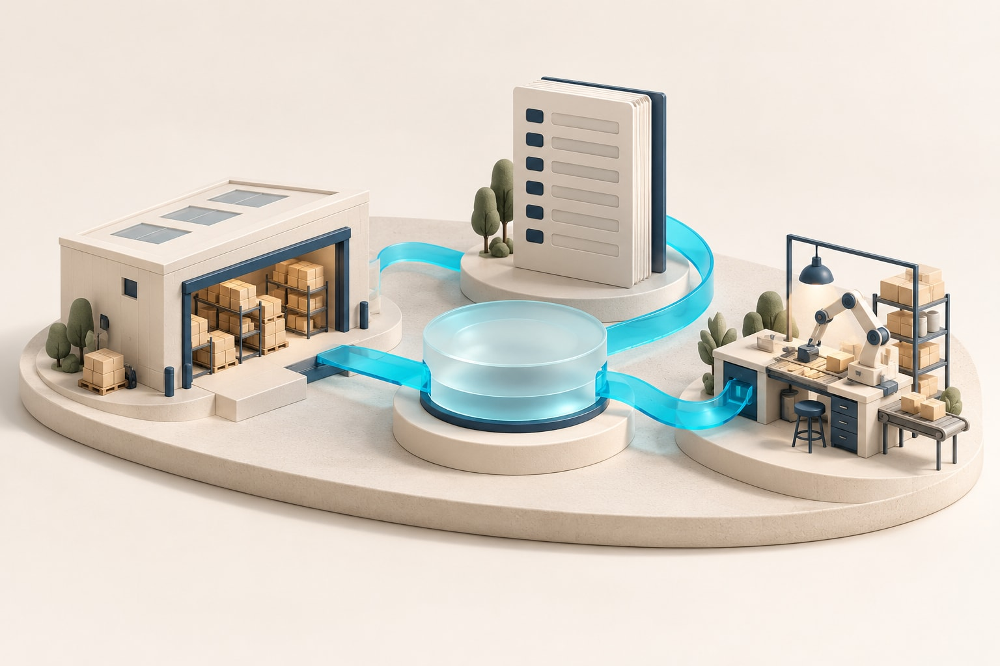
Map a representative transaction and its exceptions. Agree the teams, approvals, data, and reports needed to move it from enquiry to collection.
ERPNext is a core implementation route. Platform selection can also consider Odoo or Oracle requirements, with licensing, fit, and ownership assessed explicitly.
Prepare and validate data, rehearse real tasks with users, and plan cutover and stabilisation. Support and improvement priorities follow the way the system is used.
A shared operational picture, clearer handovers, and records that can be traced back to the work.
CONNECTED RECORDS. PRACTICAL CONTROL.
OneSpace shapes the ERP scope around the processes you need today and the connections you will need next.
Invoices, payments, receivables, payables, cost centres, and reporting.
Customer and supplier records, quotations, orders, receipts, and approvals.
Item data, transfers, deliveries, valuation, and batch or serial workflows.
Bills of materials, work orders, material movements, and quality checks.
Tasks, time, expenses, project costs, and agreed billing workflows.
Scope Frappe HR separately; connect asset records and maintenance needs.
05 / MIRAVOICE
Connect callers with the right people and give your team a consistent business phone experience, from the first ring to the follow-up.
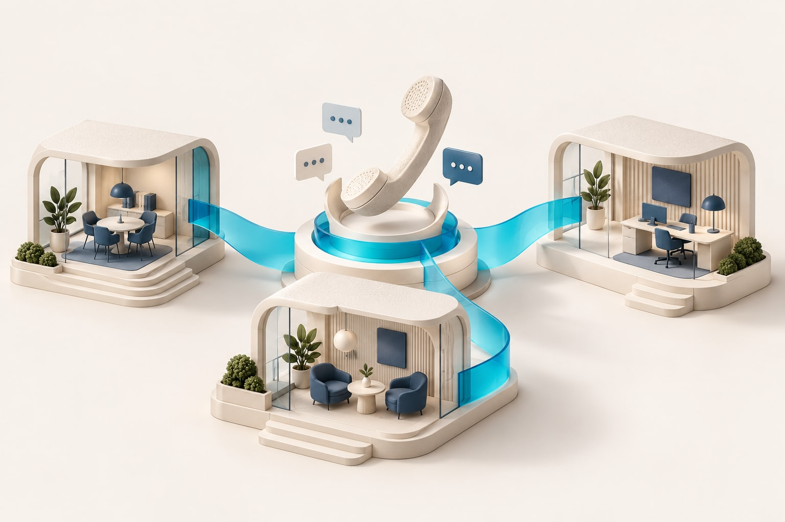
Map working hours, language choices, departments, queues, and overflow routes. Make the next step clear when someone is busy or unavailable.
Assess office and remote calling through compatible phones or clients. Network readiness, devices, and carrier requirements shape the rollout.
Agree call reports, recording permissions where required, storage, and retention. Test routing with users and provide a documented handover.
A clearer path to the right team and better visibility into how business calls are handled.
06 / NESTCLOUD
Give websites, applications, and business systems a cloud home with clear capacity, maintenance, backup, and support responsibilities.
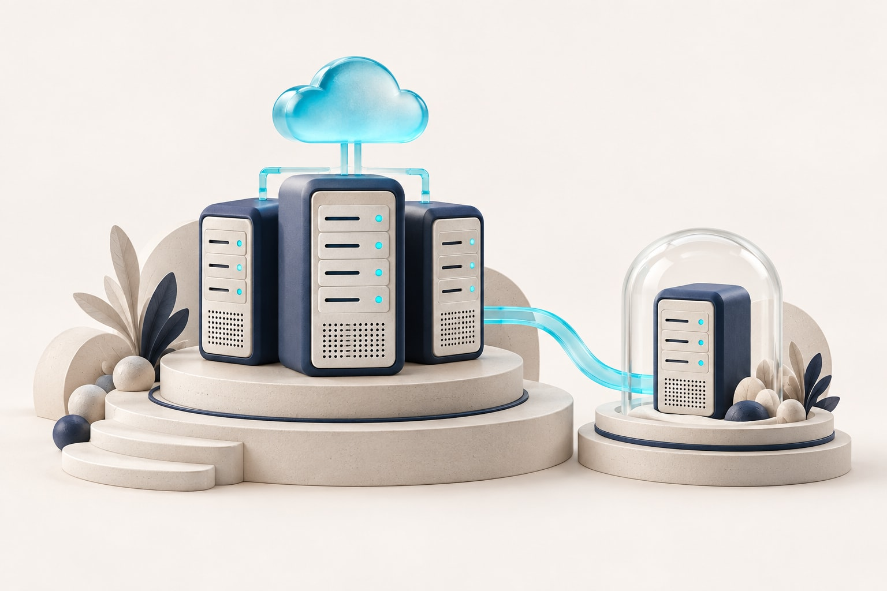
Review users, storage, integrations, and expected peaks. Define resources, access, and responsibility boundaries before migration.
Inventory dependencies, test the destination, and agree a cutover window. Verify applications and data with a rollback route in place.
Assign ownership for monitoring, updates, backups, and restore checks. Review capacity as usage changes; agree service coverage and recovery objectives.
An understood hosting environment with a migration plan and clearly assigned operational responsibilities.
07 / WEB DEVELOPMENT
Your website starts a conversation. Your application helps someone finish a job. We design and build both around the people using them and the business behind them.
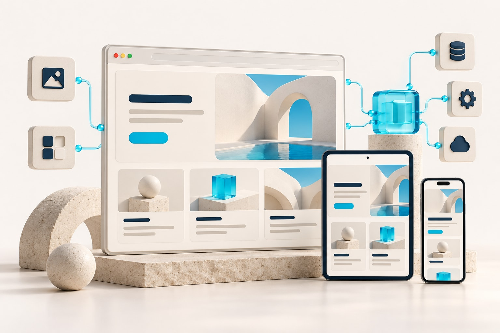
Map audience journeys, page structure, and content priorities. Shape responsive interfaces and clear navigation around the most important actions.
Build websites, portals, commerce experiences, and internal tools. Define data movement and error handling for any ERP or service integrations.
Test agreed browser and mobile journeys, accessibility, and forms. Prepare search-friendly structure, analytics, handover, and maintenance scope.
A digital experience that explains your offer, supports useful tasks, and gives enquiries a clear next step.
08 / MOBILE APPLICATIONS
From a customer placing an order to a colleague working in the field, build a mobile experience around the moment it earns its place.
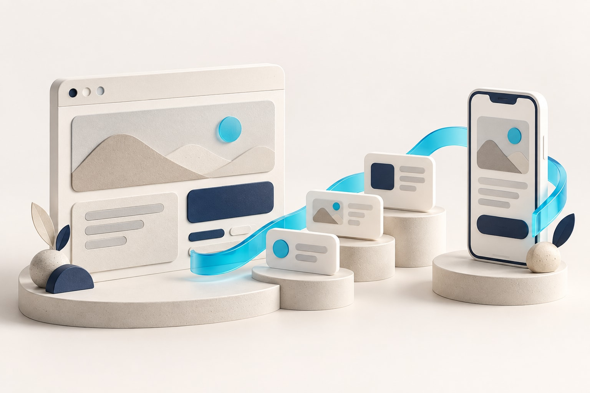
Map the core journey and test a prototype. Choose native or cross-platform development around device needs, experience, budget, and maintenance.
Design sign-in, permissions, interruptions, and recovery states. Where offline work is required, define what stays available and how changes reconcile.
Test agreed devices, prepare store submissions, and plan monitoring and updates. Store approval remains subject to each platform’s review.
A focused application users can learn quickly, with a defined connection to your business systems.
09 / DIGITAL MARKETING
Bring positioning, content, campaigns, and your website into one customer journey. Build attention around a clear offer and measure the actions that matter.
Review your offer, audience questions, channels, and competition. Agree campaign objectives and what counts as a useful enquiry or conversion.
Connect copy, graphics, motion, social content, and landing pages through one creative direction and a practical approval calendar.
Review enquiry quality, conversion paths, and campaign costs. Prioritise search content and technical foundations, then test the next improvement.
A consistent message and creative work connected to an understandable demand-generation plan.
10 / INFRASTRUCTURE
Connect offices, systems, and people with infrastructure designed around how work happens and what the business needs when something goes wrong.
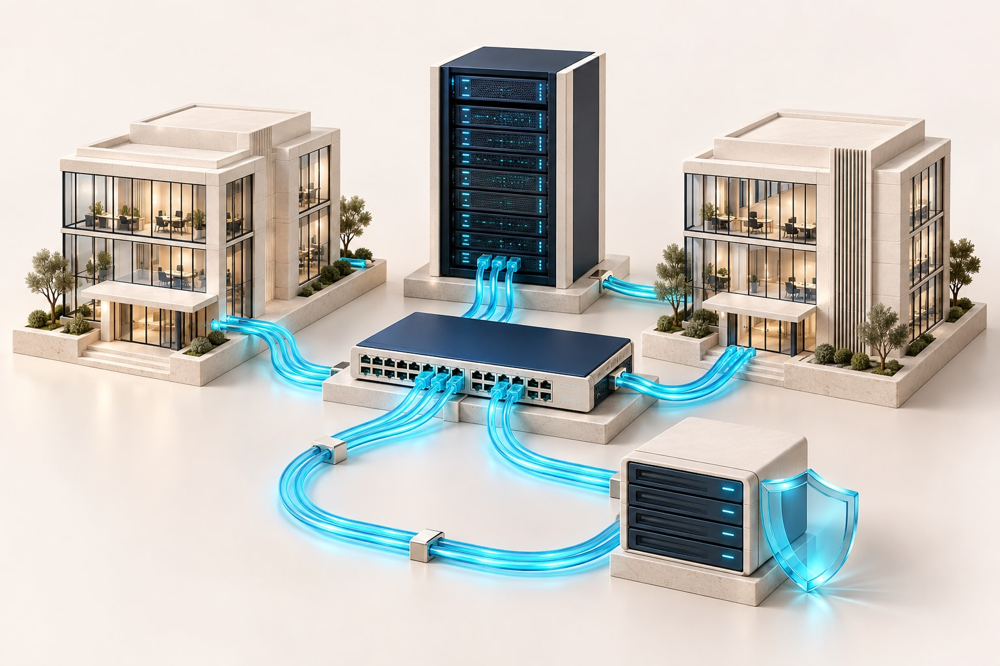
Review locations, users, devices, applications, and connectivity. Identify the systems and access paths that daily work depends on.
Plan networks, access boundaries, and remote connectivity around agreed requirements. Document equipment, configuration, and operational ownership.
Include monitoring, escalation, configuration backups, and restoration checks in the design. Define maintenance schedules and support coverage.
A documented technical foundation that makes connectivity, access, and recovery easier to manage.
START WITH THE WORK THAT MAKES YOU DIFFERENT.
Industry patterns make discovery concrete. Your processes, exceptions, data, and people determine the final scope.
Connect catalogues, purchasing, warehouses, deliveries, and collections.
Bring demand, materials, production activity, and costing into view.
Define how products, orders, stock, returns, and payments move across channels.
Link estimates, tasks, time, expenses, and billing to the work delivered.
Organise site purchasing and project costs; assess specialist contract workflows.
Assess administration, finance, stock, and assets alongside specialist applications.
These are workflow starting points, not claims of prebuilt solutions or completed projects in every sector. Specialist applications and integrations are assessed separately.
SOME OF THE CLIENTS WE WORK WITH
A selection of client brands featured across the Nest website.
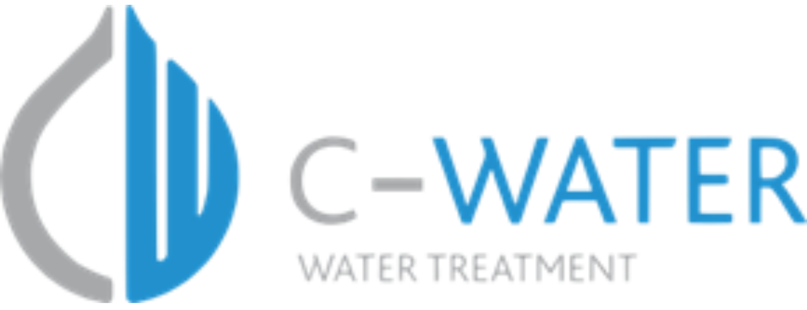
C-Water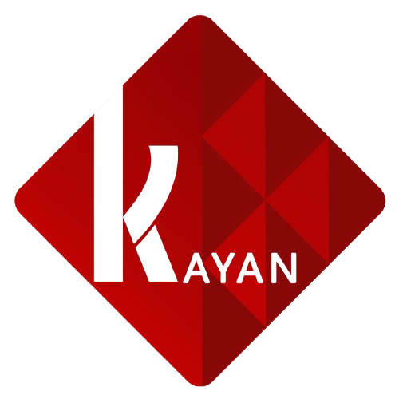
Kayan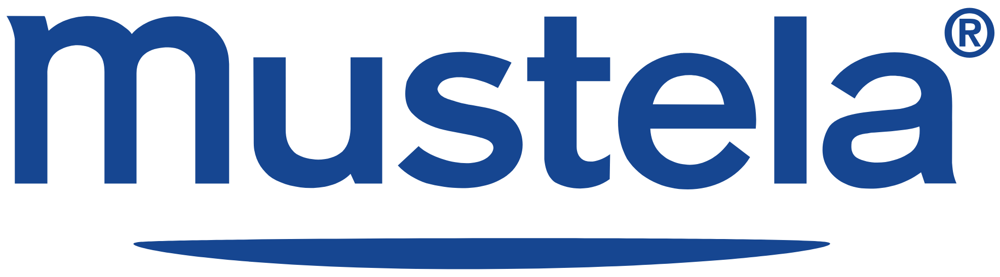
Mustela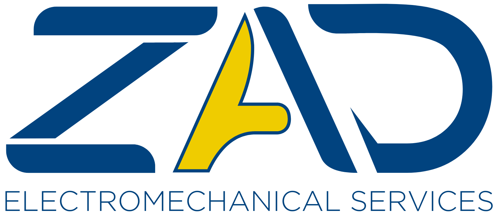
ZAD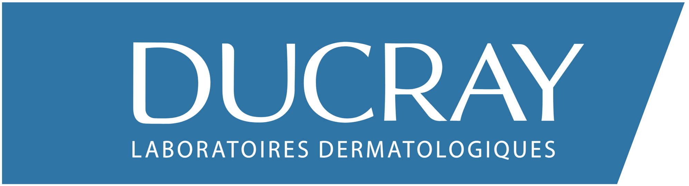
DucrayFROM A BUSINESS QUESTION TO A WORKING SYSTEM.
Understand the business problem, representative workflows, users, and constraints.
A shared brief and priority list.
Agree architecture, responsibilities, deliverables, dependencies, and acceptance criteria.
A practical scope and phased plan.
Configure, develop, integrate, and test with the people who will use the result.
Evidence that key journeys work.
Prepare cutover, train users, document ownership, and agree support and review priorities.
A supported transition and next-step backlog.
Technical discovery, a connected view of the work, explicit delivery boundaries, testing, and a documented handover.
Clear process ownership, timely decisions, usable data, user participation, and an agreed definition of success.
LET’S START WITH YOUR BUSINESS.
An operational bottleneck. A disconnected customer journey.
A system that needs to grow with you.
Bring us the starting point. We will help define the next step.
6th of October City
Giza, Egypt
